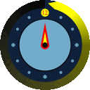

The 23nd Annual
Negative Time Solving Contest
Negative Time is your yearly chance to solve a cube in negative time as Daylight Saving Time (DST) ends and time falls back one hour. Negative Time falls in autumn, although the date varies greatly based on where you are:
| Oceania | Apr. 5, 2026 | RSVP on Facebook |
| Europe | Oct. 25, 2026 | |
| North America | Nov. 1, 2026 | |
| Elsewhere | Check timeanddate.com |
Not all locations in these regions observe daylight savings. See timeanddate.com to check the clock change schedule in your area, and the time.is for the exact current time.
🔗 The Contest
The contest has taken place every year since 2004. This challenge statement by then-Caltech undergrad Tyson Mao explains its origin:
There is only one day of the year where one can leave the drudgery of Caltech academic life and sprint off for a chili burger, chili dog, and chili fries in a timely manner. A very timely manner indeed... so timely that one can actually return before he departs.
This is the way of the Negative-Time Tommy's run. On one day of the year, a little bit before the first 2 AM, Caltech students hop in their cars and make a dash for the original Tommy's in Beverly Hills for some items with a lot of chili. The goal is to simply return before you left…
I challenge all of you to take part in the negative time solving tradition. We will have a website with the one, yes only ONE scramble which you will use for this entire year…
See Macky's site for information about previous negative time contests.
🔗 The Rules
By submitting your time(s), you indicate that you are following these rules:
- Use the provided scramble sequence. As usual, take up to 15 seconds of inspection for a normal speedsolve.
- Begin your solve before daylight saving ends and complete your solve after it ends in your time zone. In the United States, for example, you must begin every solve (start the timer and e.g. turn the cube, not just inspection) before the first "2am" and end every solve after the second 1am. For example, if you start at 1:59:55 and end at 1:00:07, your negative time is -59min, 48sec.
- Be honest in reporting your results! The fun lies in the novelty that you can only do this once a year, but you can always try again next year.
- You are welcome to try your own challenges, such as a negative time blindfolded solve or a negative time kilominx solve. You can also try "most cubes solved in a negative time", or "fewest moves solution found in negative time".
- You may perform multiple negative solves in parallel, by switching between them. Make sure that each individual solve is started before the time change, though.
- If you are in multiple parts of the world throughout the year and experience multiple time changes, you can use this to do more attempts. However, you should submit at most one result per event/challenge per year.
🔗 Scramble for 3×3×3
The 3x3x3 scramble for 2026 is below. This is the only Negative Time Solving 3x3x3 speedsolve scramble for 2026. Do not use it before the real attempt:
🔗 Scrambles for other events
Scrambles for 2026 for all WCA events, as well as FTO, Kilominx, Master Tetraminx, Redi Cube, and Baby FTO, are in this ZIP file, and you can also view the scramble for a given event below. For any other challenges, use your own scrambles.
🔗 Results
Please submit your results for 2026 using this link:
Past results are at: